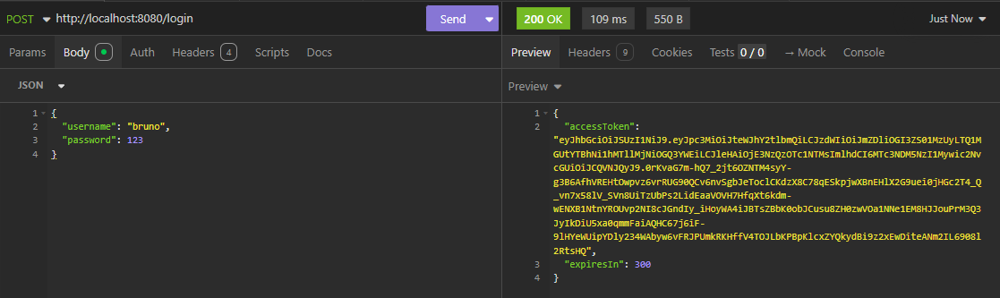
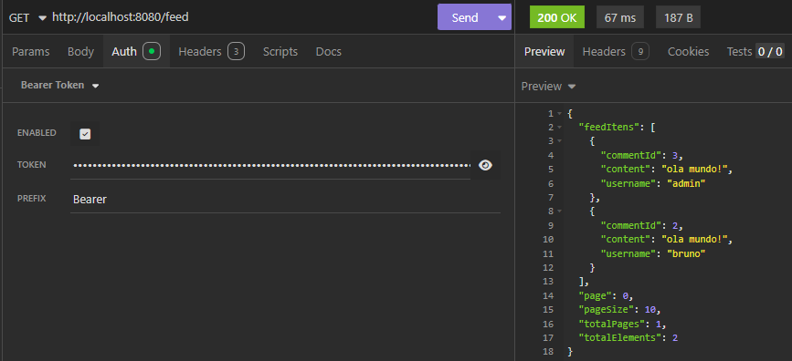

O que é o Projeto
Este projeto é uma API RESTful em Java com Spring Boot 3 que implementa um sistema completo de autenticação e autorização usando Spring Security 6, JWT com criptografia assimétrica RSA e OAuth2 Resource Server · adaptado para funcionar como um fórum com feed de comentários paginado.
O ponto de partida foi o tutorial da BuildRun Tech sobre Spring Security 6 + JWT,
que originalmente usava tweets como recurso principal. A adaptação central foi
substituir tweets por comentários (Comments), tornando
o domínio mais próximo de um fórum real, e acrescentar o ambiente dockerizado com
MySQL e DataGrip para gerenciamento do banco de dados.
O resultado é uma API segura, stateless e pronta para produção, com dois níveis de permissão (ADMIN e BASIC), geração e validação de tokens JWT assinados com par de chaves RSA (pública/privada) e criação automática do usuário administrador na inicialização da aplicação.
Acesso
Principais
JPA
JWT com RSA e OAuth2 Resource Server
A camada de segurança é o coração do projeto. Em vez de usar uma biblioteca JWT de terceiros, a aplicação aproveita o suporte nativo do Spring Security 6 ao OAuth2 Resource Server, que já inclui o Nimbus JOSE para codificação e validação de tokens · sem dependências extras.
Os tokens são assinados com um par de chaves RSA (pública e privada) configuradas
via application.properties. O JwtEncoder usa a chave
privada para assinar o token no login, e o JwtDecoder usa a chave
pública para validar cada requisição protegida · garantindo que nenhum token possa
ser forjado sem acesso à chave privada.
Configuração do SecurityFilterChain
O SecurityConfig.java define a cadeia de filtros com três regras
centrais: o endpoint POST /users (cadastro) e POST /login
são públicos; qualquer outra requisição exige autenticação. A sessão é configurada
como STATELESS · sem cookies, sem estado no servidor · e o
CSRF está desabilitado, adequado para APIs consumidas por clientes externos.
Usar o OAuth2 Resource Server nativo do Spring Boot elimina a necessidade de filtros JWT customizados, tornando a configuração de segurança mais limpa, declarativa e alinhada com os padrões do ecossistema Spring.
Autorização por Escopo com @PreAuthorize
O controle de acesso por role é feito via anotação @PreAuthorize
habilitada com @EnableMethodSecurity. O endpoint
GET /users, que lista todos os usuários, só pode ser acessado por
quem possui SCOPE_ADMIN no token JWT. Usuários com role BASIC
recebem 403 Forbidden automaticamente.
Entidades, Repositórios e Controllers
O projeto segue a arquitetura em camadas padrão do ecossistema Spring, com separação clara entre entidades JPA, repositórios Spring Data e controllers REST.
Entidades JPA
-
User (
tb_users): identificado por UUID gerado automaticamente (@GeneratedValue(strategy = GenerationType.UUID)), com username único, senha hasheada com BCrypt e relacionamento@ManyToManycom roles via tabela de junçãotb_users_roles. Inclui o métodoisLoginCorrect()que valida a senha usando oPasswordEncoderinjetado. -
Role (
tb_roles): enum internoValuescom os valores ADMIN (id=1) e BASIC (id=2), permitindo referência tipada sem strings literais espalhadas pelo código. -
Comments (
tb_comments): relacionado aUservia@ManyToOne, com conteúdo textual e timestamp de criação gerado automaticamente pela anotação@CreationTimestampdo Hibernate.
Controllers
-
TokenController ·
POST /login: recebe username e senha, valida contra o banco com BCrypt, monta os claims JWT (issuer, subject com UUID do usuário, expiração de 300 segundos e scope com as roles), assina com a chave privada RSA e retorna o token. -
UserController ·
POST /users(público): cadastra novo usuário com role BASIC automaticamente.GET /users(apenas ADMIN): lista todos os usuários cadastrados. -
CommentsController ·
GET /feed: retorna feed paginado e ordenado por data decrescente, com suporte a parâmetrospageepageSize.POST /comments: cria comentário vinculado ao usuário autenticado (UUID extraído do token JWT).DELETE /comments/{id}: permite que o autor delete seu próprio comentário · ou que um ADMIN delete qualquer comentário.
Docker, MySQL e Ambiente Local
O banco de dados MySQL roda em um container Docker, eliminando a necessidade de
instalação local e garantindo um ambiente isolado e reproduzível. A configuração
do container é feita via docker-compose.yml, subindo o MySQL com as
variáveis de ambiente necessárias para o Spring se conectar automaticamente.
O DataGrip foi utilizado como cliente de banco de dados para
inspecionar as tabelas (tb_users, tb_roles,
tb_users_roles e tb_comments), verificar os dados
inseridos e validar os relacionamentos gerados pelo Hibernate.
O IntelliJ IDEA foi a IDE utilizada para o desenvolvimento.
As chaves RSA (pública e privada) foram geradas via OpenSSL e referenciadas
no application.properties pelas propriedades
jwt.public.key e jwt.private.key.
Inicialização Automática do Admin
O AdminUserConfig.java implementa CommandLineRunner,
executando na inicialização da aplicação. Ele verifica se o usuário
admin já existe no banco · se não existir, cria automaticamente
com a role ADMIN e senha hasheada com BCrypt. Isso garante que o sistema sempre
tenha um administrador disponível sem necessidade de seed manual.


Rotas e Regras de Acesso
-
POST /users· público. Cria novo usuário com role BASIC. Retorna422se o username já existir. -
POST /login· público. Valida credenciais e retorna o JWT com tempo de expiração de 300 segundos. -
GET /users· apenasSCOPE_ADMIN. Lista todos os usuários cadastrados. -
GET /feed· autenticado. Retorna feed paginado de comentários, ordenado do mais recente para o mais antigo. Parâmetros:page(default 0) epageSize(default 10). -
POST /comments· autenticado. Cria um comentário vinculado ao usuário dono do token JWT. -
DELETE /comments/{id}· autenticado. O autor pode deletar o próprio comentário; ADMIN pode deletar qualquer um. Retorna403 Forbiddense o usuário não tiver permissão.
O que aprendi com este projeto
Este projeto foi o primeiro contato prático com Spring Security 6 e deixou claro o quanto a framework evoluiu. A configuração baseada em componentes · sem herança de classes depreciadas · e o suporte nativo ao OAuth2 Resource Server tornam a implementação de JWT muito mais simples e alinhada com padrões da indústria do que nas versões anteriores.
Entender o fluxo completo de autenticação · desde a geração do par de chaves RSA,
passando pela emissão do JWT com claims tipados, até a validação automática em
cada requisição pelo JwtDecoder · solidificou conceitos fundamentais
de segurança em APIs REST que são exigidos no mercado de trabalho.
A adaptação do projeto original (tweets → comments) reforçou a capacidade de aplicar um tutorial a um contexto diferente, entendendo o que pode ser reaproveitado e o que precisa ser redesenhado · uma habilidade essencial no dia a dia do desenvolvimento profissional.
Baseado em Tutorial
Este projeto foi desenvolvido seguindo o tutorial de BuildRun Tech, disponível no canal BuildRun Tech YouTube. O repositório original está em buildrun-tech/buildrun-spring-security-jwt-example. O conteúdo foi estudado, adaptado (tweets → comments / fórum) e expandido com Docker, MySQL e DataGrip durante o processo de aprendizado.